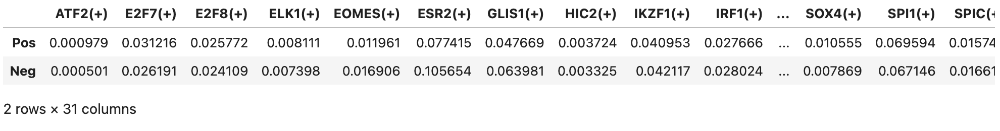
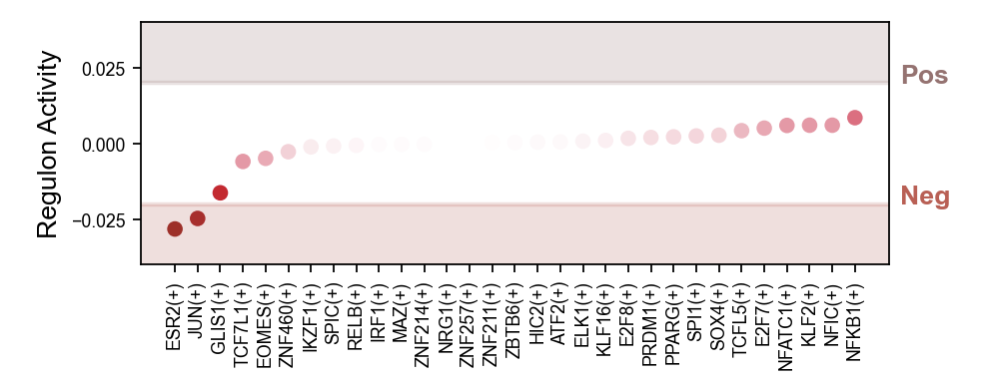
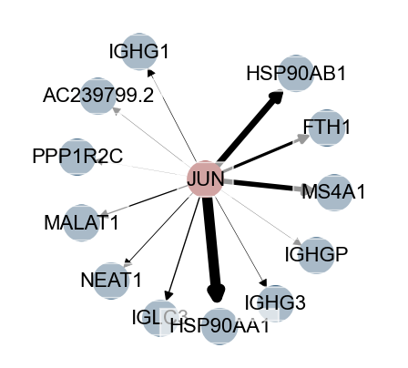

4.5 转录因子网络
恭喜你，来到了B细胞亚群的最后一小节分析，我们在前面的研究中已经比较过淋巴结转移的差异表达、细胞通讯以及动态调控的差异，更进一步的，我们需要挖掘背后调控的分子机制，到底是什么因素在控制着淋巴结转移，于是很直观的，我们将采取转录因子分析。
我们在GLUE的第三部分，已经得到了每个细胞的AUCell文件，该文件代表了每一个细胞所含有的转录因子类型以及活性，下面，我们就利用这个文件，进一步挖掘阳性淋巴结与阴性淋巴结背后的调控关系。
首先依然是导入包
#导入包
import anndata
print('anndata(Ver): ',anndata.__version__)
import scanpy as sc
print('scanpy(Ver): ',sc.__version__)
import scltnn #非必需
print('scltnn(Ver): ',scltnn.__version__)
import matplotlib.pyplot as plt
import matplotlib
print('matplotlib(Ver): ',matplotlib.__version__)
import seaborn as sns
print('seaborn(Ver): ',sns.__version__)
import numpy as np
print('numpy(Ver): ',np.__version__)
import pandas as pd
print('pandas(Ver): ',pd.__version__)
import scvelo as scv
print('scvelo(Ver): ',scv.__version__)
import Pyomic
print('Pyomic(Ver): ',Pyomic.__version__)
#绘图参数设置
sc.settings.verbosity = 3 # verbosity: errors (0), warnings (1), info (2), hints (3)
sc.settings.set_figure_params(dpi=80, facecolor='white')
sc_color=['#7CBB5F','#368650','#A499CC','#5E4D9A','#78C2ED','#866017','#9F987F', '#E0DFED', '#EF7B77', '#279AD7',
'#F0EEF0', '#1F577B', '#A56BA7', '#E0A7C8', '#E069A6', '#941456', '#FCBC10', '#EAEFC5', '#01A0A7', '#75C8CC',
'#F0D7BC', '#D5B26C', '#D5DA48', '#B6B812','#9DC3C3', '#A89C92', '#FEE00C','#FEF2A1']
接着，我们导入了一些数据
#rna表达数据
rna=sc.read('B_cell_anno_new.h5ad')
#aucell数据
rna_aucell=pd.read_csv('../glue_true/rna_aucell.tsv',sep ='\t')
rna_aucell.set_index(rna_aucell.columns[0],inplace=True)
#生成aucell的h5ad（B细胞）
rna_auc_adata=anndata.AnnData(rna_aucell)
rna_auc_adata=rna_auc_adata[rna.obs.index]
rna_auc_adata.obs=rna.obs
rna_auc_adata.uns=rna.uns
我们绘制出阳性淋巴结与阴性淋巴结的平均转录因子水平
regulons=pd.DataFrame(columns=rna_auc_adata.var.index)
for i in list(set(rna_auc_adata.obs['Type'])):
regulons.loc[i]=rna_auc_adata[rna_auc_adata.obs['Type']==i].X.mean(axis=0)
regulons.head()

我们使用Pos减去Neg，得到阳性与阴性的转录因子离散度
regulons_d=regulons.loc['Pos']-regulons.loc['Neg']
regulons_d=regulons_d.sort_values()
我们接着可视化离散情况，找出离散度最大的转录因子
from colormap import Colormap
c = Colormap()
rnacmap = c.cmap_linear( '#ffffff','#de0029','#a51616')
nodecmap= c.cmap_linear( '#a51616','#ffffff',sc_color[11])
type_color={
'Pos':'#9B7170',
'Neg':'#C65A50'
}
fig, ax = plt.subplots(figsize=(6,2))
plt.scatter(regulons_d.index,regulons_d.values,c=abs(regulons_d.values),cmap=rnacmap)
regulons_d_num=(abs(regulons_d.min())>abs(regulons_d.max()) and abs(regulons_d.min()) or abs(regulons_d.max()))
regulons_d_min=(0-round(regulons_d_num,2))-0.01
regulons_d_max=round(regulons_d_num,2)+0.01
plt.yticks(fontsize=8)
plt.ylim(regulons_d_min,regulons_d_max)
plt.grid(False)
plt.xticks(fontsize=8,rotation=90)
plt.gca().add_patch(plt.Rectangle(xy=(-2,0.02),
width=len(regulons_d)+3, color=type_color['Pos'],
height=15,alpha=.2,
fill=True, linewidth=2))
plt.gca().add_patch(plt.Rectangle(xy=(-2,-0.02),
width=len(regulons_d)+3, color=type_color['Neg'],
height=-15,alpha=.2,
fill=True, linewidth=2))
plt.text(len(regulons_d)+1,0.02,'Pos',fontsize=12,color=type_color['Pos'],fontweight='bold')
plt.text(len(regulons_d)+1,-0.02,'Neg',fontsize=12,color=type_color['Neg'],ha='left',fontweight='bold')
plt.ylabel('Regulon Activity',fontsize=12)
plt.savefig("grn/pos_neg_T.png",dpi=300,bbox_inches = 'tight')

进一步的，我们找到了ESR2与JUN两个转录因子，我们需要绘制其背后具体的调控关系，我们首先导入GLUE生成的调控网络
import scglue
grn = scglue.genomics.read_ctx_grn("../glue_true/pruned_grn.csv")
然后我们构建一个函数plot_sub_nodes，用于可视化其中特定的转录因子
def plot_sub_nodes(grn,goal_node):
sub_grn=grn.subgraph([node for node in nx.dfs_preorder_nodes(grn,goal_node)])
edge_dict={}
for i in sub_grn.edges():
edge_dict[i]={"weight":draft_grn.query("`TF` == '{}' and `target` == '{}'".format(i[0],i[1]))['importance'].values[0]}
nx.set_edge_attributes(sub_grn,edge_dict)
fig, ax = plt.subplots(figsize=(3,3))
pos = nx.spring_layout(sub_grn,k=3)
p=dict(sub_grn.nodes)
for i in p.keys():
if i ==goal_node:
p[i]=0
else:
p[i]=1
nx.draw_networkx_nodes(sub_grn, pos, nodelist=p,cmap=nodecmap,
node_color=list(p.values()))
edgewidth = [sub_grn.get_edge_data(u, v)['weight']/10 for u, v in sub_grn.edges()]
nx.draw_networkx_edges(sub_grn, pos,width=edgewidth)
label_options = {"ec": "white", "fc": "white", "alpha": 0.6}
nx.draw_networkx_labels(sub_grn, pos, font_size=10, bbox=label_options)
plt.grid(False)
plt.axis("off")
plt.xlim(-1.3,1.3)
我们应用这个函数plot_sub_nodes
goal_node='JUN'
plot_sub_nodes(grn,goal_node)
plt.savefig("grn/sub_grn_{}.png".format(goal_node),dpi=300,bbox_inches = 'tight')

到这里，本次B细胞亚群的分析流程就结束了，祝你学有所成